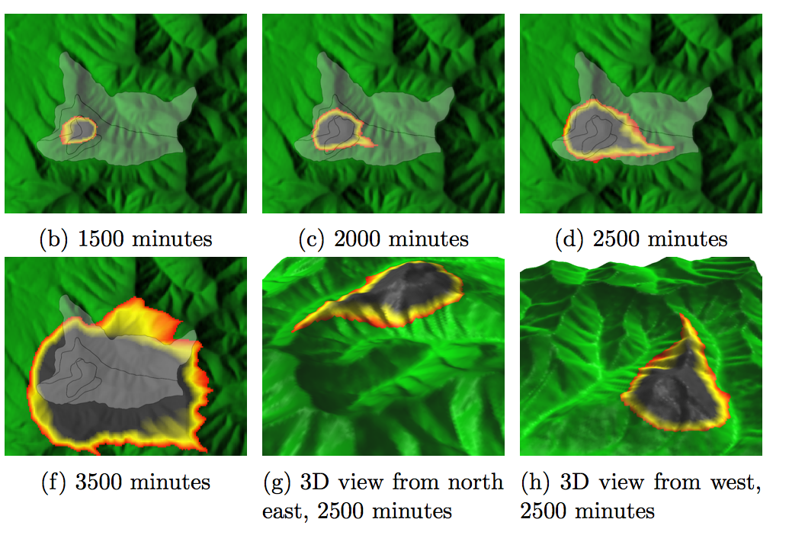
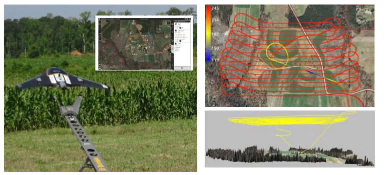
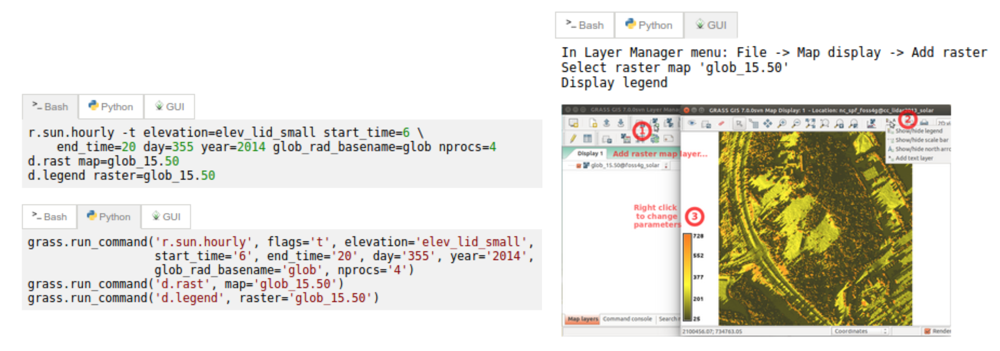

What is FOSS?
Free and Open Source Software
Software that is free to run, study, modify and distribute
Free means freedom: free is a matter of liberty not price
It can be commercial but not proprietary
FOSS is everywhere
Microsoft loves Linux
—Satya Nadella, Microsoft CEO, 2014
Apple uses software created by the Open Source community and returns its enhancements to the community.
—Apple Inc., 2015
Google, Amazon, Facebook, IBM, Internet servers use and contribute
to FOSS and the community
FOSS is essential in science
Software [...] developed as part of novel methods is as important
for the method's implementation [...]
Such software [...] must be made available to readers upon publication.
Social software, Nature Methods 4 , 189, 2007
Note: making software available to readers does not make it FOSS
Geospatial FOSS
OSGeo foundation supports the development of FOSS4G
and promotes its widespread use. Example projects:
Web Mapping and Desktop Applications
GeoServer ,
MapServer ,
OpenLayers ,
GRASS GIS ,
QGIS ,
Geospatial Libraries and Databases, Metadata Catalogs
GDAL ,
GEOS ,
GeoTools ,
PostGIS ,
GeoNetwork ,
pycsw
Non-OSGeo projects with geospatial capabilities: R, pySAL
Geospatial FOSS at NCSU
NCSU OSGeo Research and Education Laboratory:
https://geospatial.ncsu.edu/osgeorel
course development using Geospatial FOSS
research projects
active participation in OSGeo projects
Course development
Software and GIS education problem
students are becoming software users instead of scientists
students confuse software implementation issues with fundamental concepts
bonding with single software limits flexibility and broader knowledge of the field
Beyond teaching GIS software
Lectures: software-independent, focus on theory, concepts
Assignments:
hands-on practice related to lecture topic
students use two different software packages solving similar tasks in both
opportunity to see what is a general concept
and what is specific to a particular software
Independent project: focus is on research question, students chose software/tools/data
Geospatial Analysis and Modeling course
offered since 2008 as on-campus and distance course
every semester 30-50 students
assignments in both GRASS GIS and ArcGIS
workflow for each software is provided
students write papers explaining methods and results
Assignments: Erosion Modeling
Sample lines from instructions and results for GRASS GIS and ArcGIS
r.mapcalc "sedflow = 270. * Kfac * Cfac * flowacc * sin(slope)"
r.divergence magn=sedflow dir=aspect out=erosion_deposition
Build an expression for sflowtopo:
"flowacc" * Sin("slope" * math.pi/180.0)
output raster = sflowtopo
Lilliana Velasquez, Spring 2014
Midterm exam
Simple workflows for given problems in GRASS GIS or ArcGIS:
example least cost path solutions in GRASS and ArcGIS
Vaclav Petras and Laura Belica
Independent Project
Focused on student's research interests, any geospatial software can be used
only condition: surface or continuous field component must be included

Vaclav Petras
GIS for Designers
GIS as an integral part of the creative design process
software in class:
ArcGIS and Rhino (proprietary)
GRASS GIS and Tangible Landscape (open source)
projects: combination of GIS and design tools
UAV/lidar Data Analytics
Trimble flight planning software and GRASS GIS
Agisoft PhotoScan and experimentally OpenDroneMap
GRASS GIS, Python

UAV/lidar Data Analytics
Assignment: Impact of terrain change on water flow, january and june flight
with corn fields
Multidimensional Geospatial Modeling
Modeling of landscape dynamics using multitemporal georeferenced data and simulations
software:
GRASS GIS,
often with new features such as
Temporal Framework
+ whatever the students need, e.g.
XBeach, libLAS, ArcGIS
new technologies:
Tangible Landscape, NCSU Hunt Lib Teaching and Vis Lab,
eye tracking
Multidimensional Geospatial Modeling
Modeling of landscape dynamics using multitemporal data and simulations
Example assignments on subsurface soil moisture and solar radiation
Course material on-line
NCSU MGIST program is undergoing update and re-design
Keeping assignments up-to-date
Most of the assignment instructions provided as text (easy to update),
students generate the images.
GRASS GIS workflows provided as commands.
GUI dialog filled according to the command.
Commands can be automatically extracted and tested.
Text also for running ArcGIS part through GUI,
but the names in dialogs are not part of the API, so they change.
Experimental tutorial design
Interacting with software in multiple ways:
tutorial with tabs showing the task run through GUI, CLI or python

Example: GRASS as temporal GIS workshop
http://ncsu-osgeorel.github.io/grass-temporal-workshop/
Standardized sample datasets
Initiative to make the course material location specific through data sets with standardized names of layers
g.region raster=elevation
r.relief input=elevation output=shade
d.shade shade=shade color=elevation
Result for North Carolina, Czech Republic and Piemonte (Italy)
See wiki page ,
and create data set for your region.
Research
research with FOSS4G:
using FOSS4G as a tool,
developing FOSS4G by implementing new methods
FOSS4G development: join open community of developers and users
Our research: Tangible Landscape, Modeling and simulations of dynamic landscapes,
Ultrahigh resolution monitoring and analysis, Sustainable land management
Student opportunities
Code or community sprints:
Google Summer of Code
since 2005, 8500 students (from 101 countries), 8300 mentors, ~$5500 per students
OSGeo GSoC page
Tools for open science course
Course dedicated to
exploring important role of FOSS in science
overview of tools and methods common in FOSS and needed in science
open access, open data, open standards, open...
reusability and reproducibility are standard in FOSS
Geo for All
Making geospatial education & solution accessible to all
establishing research and teaching opportunities
building global open access teaching infrastructure
worldwide labs network, students and faculty exchange
based on MOU between OSGeo and ICA, ISPRS
join at:
www.geoforall.org/how_to_join
Summary
What can we do:
improve students' geospatial skills by teaching diverse software packages
join the open source software community as user or developer
share teaching materials through OSGeo Educational Content Inventory
join geo4all - send email to hmitaso@ncsu.edu and describe your FOSS4G activities (link to your website is enough)
Read more in:
Petras V., Petrasova A., Harmon B., Meentemeyer R.K., Mitasova, H., 2015,
Integrating Free and Open Source Solutions into Geospatial Science Education .
ISPRS International Journal of Geo-Information. 2015. Open Access,
doi:10.3390/ijgi4020942
Resources: courses and tutorials
For QGIS
NCSU OSGeoREL courses
OSGeo Educational Content Inventory
Resources: workshops developed at NCSU
Resources: software and platforms